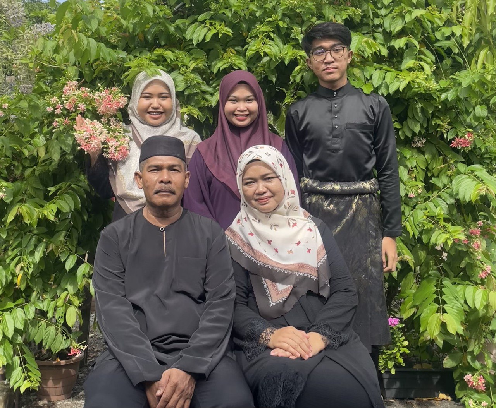

My Family

My father's name is Hassan Bin Kapi and he was born at Kampung Bintong Kangar, Perlis. He was born in 26 Jun 1965. He married my mom in 1994. To me he was the best father in the world. He always giving his full attention to his children and making sure we have the best in life. My father is truly remarkable because he can handle anything!
My mother's name is Mazlina Binti Othman was born on 20 October 1974. She is a dedicated housewife and an amazing person. She always wanted her children to be a succesful. She always encourages me to work hard in my studies and ensure I complete my Diploma on time. My mother's cooking is always delicious. No one can't beat. My mother is also an incredible cook; her food is unmatched and one of the reasons I enjoy eating so much!
I have two older sisters, Nurhazwanie Binti Hassan and Nurnajihah Binti Hassan.
I aim to make them proud by giving my best in everything I do. I am forever grateful for their sacrifices and unwavering belief in me.